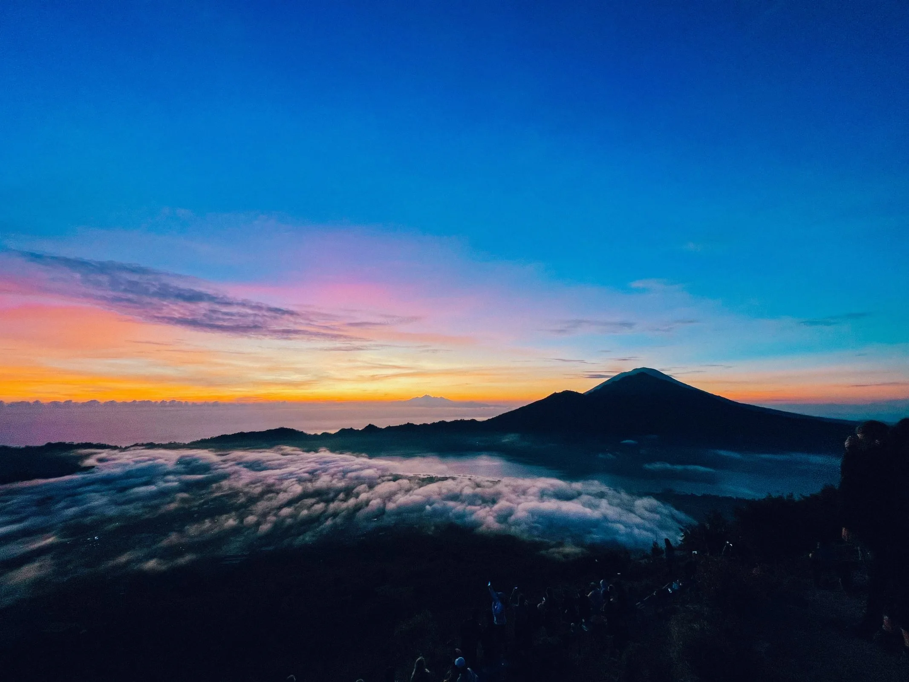
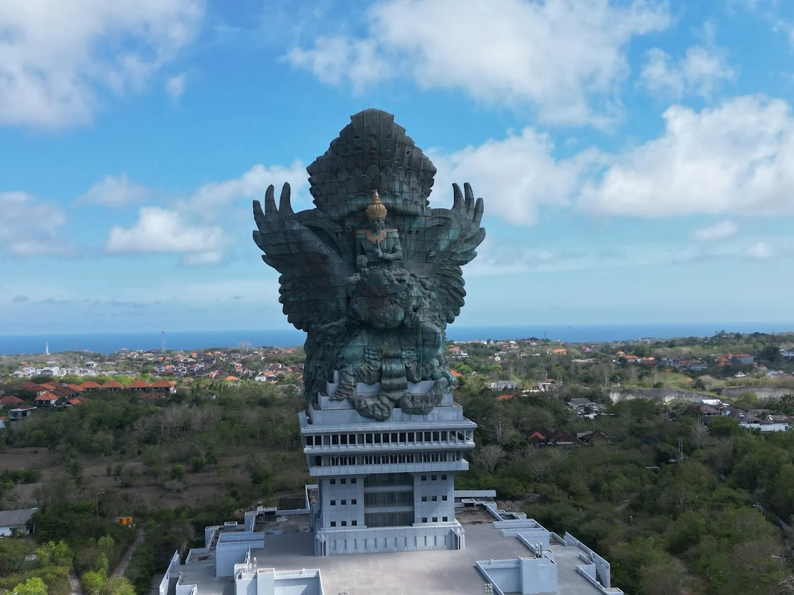

Best Locations in Bali
1. Mount Batur Sunrise Trekking
Experience the breathtaking beauty of Bali with the Mount Batur Sunrise Trek. Go on an exhilarating adventure as you ascend the slopes of Mount Batur, an active volcano, under the guidance of expert local guides. Marvel at the stunning vistas of lush forests and panoramic landscapes along the way. Reach the summit just in time to witness a magical sunrise casting its golden glow over Mount Batur and Lake Batur, creating a truly mesmerizing sight. Enjoy this Mount Batur Sunrise trekking with your loved ones and explore the volcanic terrain and learn about the geological history of the area.
2. Garuda Wisnu Kencana Cultural Park
Gain some insights into the rich culture of Indonesia as you visit this famous park in Bali, spread over 60 hectares of area. Marvel at 121 meters high Garuda Wisnu Kencana statue, a masterpiece depicting the Hindu god Vishnu riding the mythical bird Garuda while exploring the park. Stroll through the park's enormous grounds and see beautifully landscaped gardens, traditional Balinese architecture & various cultural displays. Get to know about local arts & traditions as you enjoy ongoing performances of traditional Balinese dance & music. Shop for traditional crafts & local artworks while exploring the shopping complex.